Theory
Triskel's layout algorithm is based on a divide and conquer approach using SESE regions.
The graph is split into it's SESE regions, then each region is laid out using Sugiyama Layered graph drawing.
This approach yields graphs with significantly less edge crossings and clearer layouts.
These results were presented at the Workshop on Binary Analysis Research 2025 (paper, presentation).
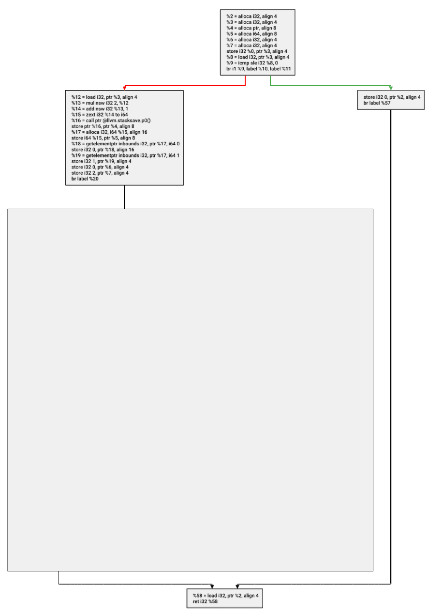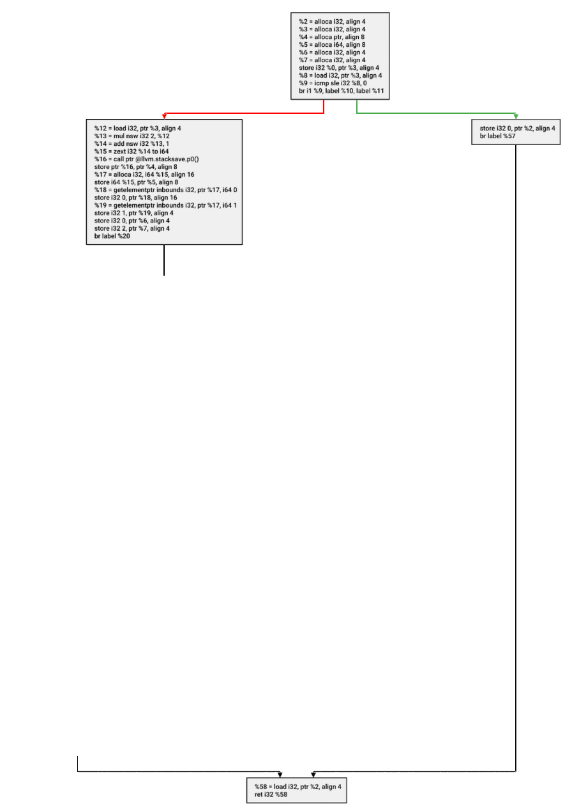
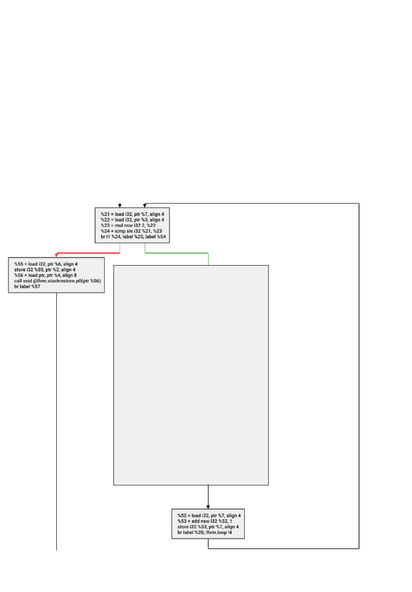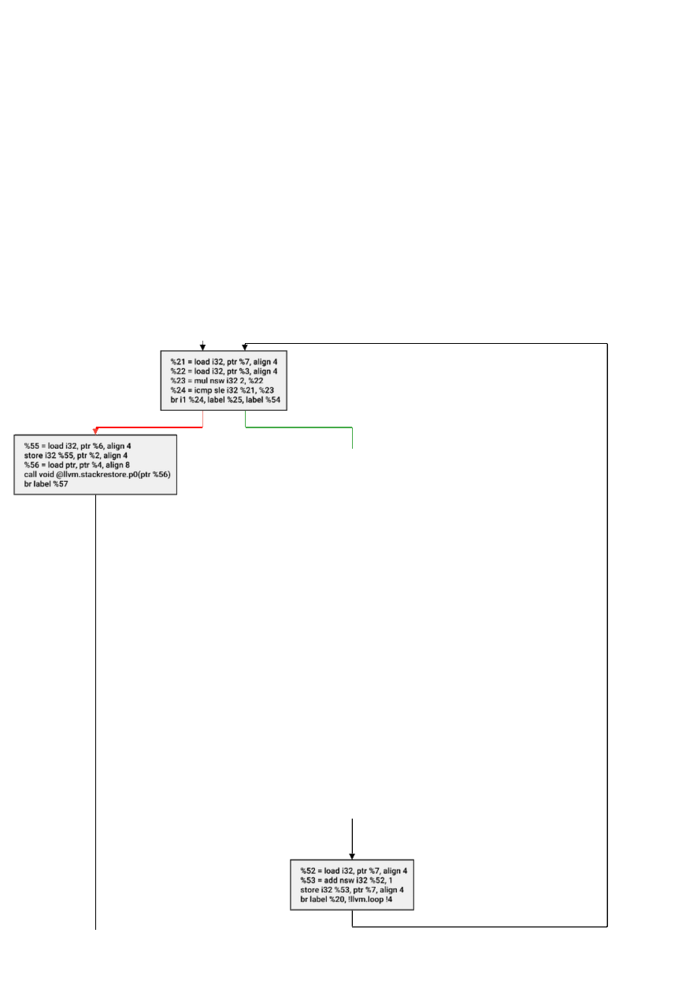
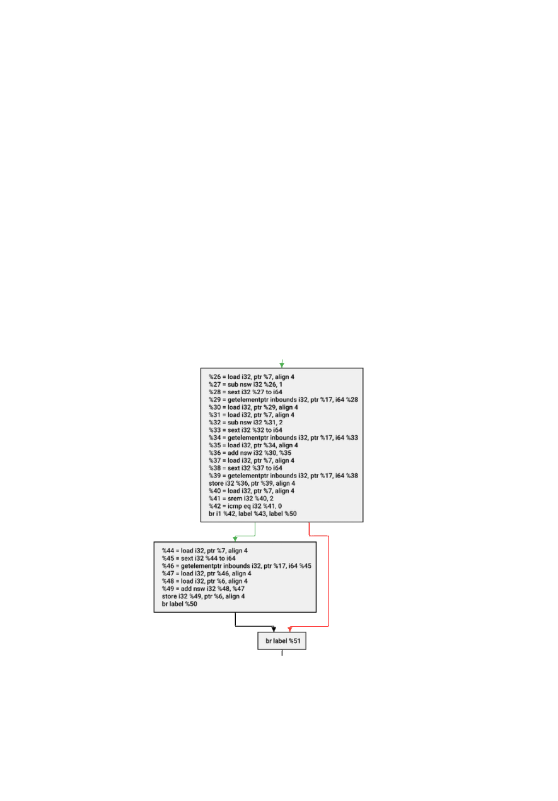
Screenshots
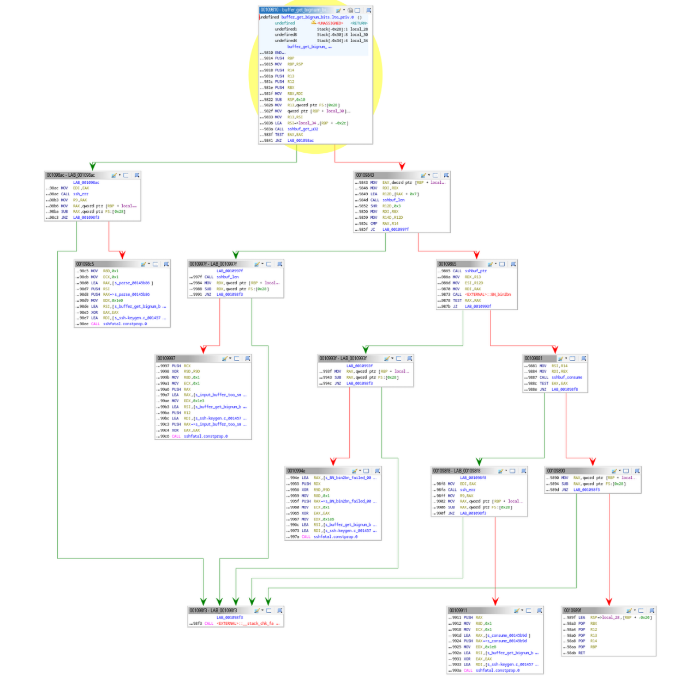
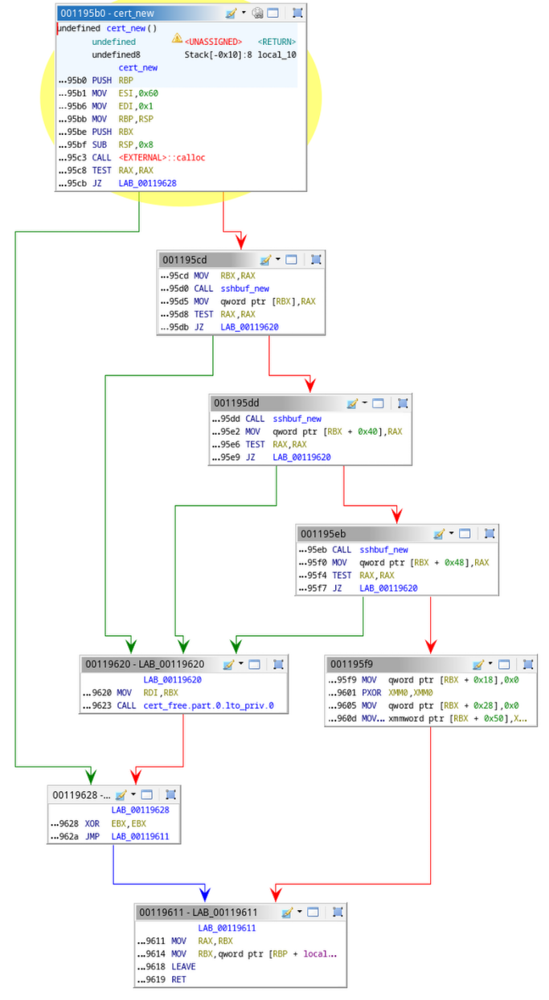

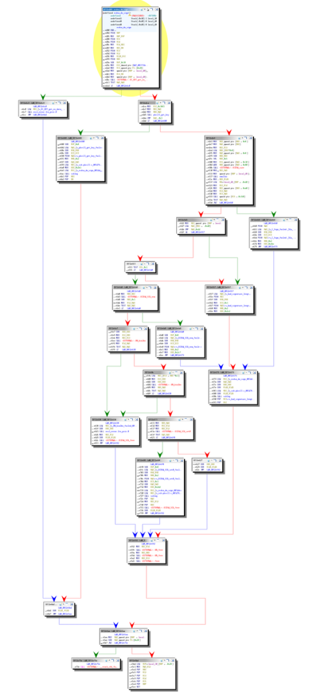
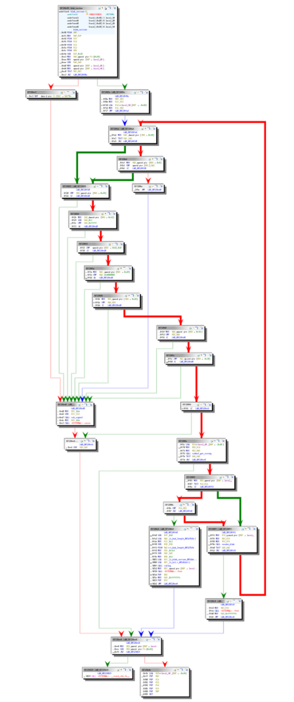
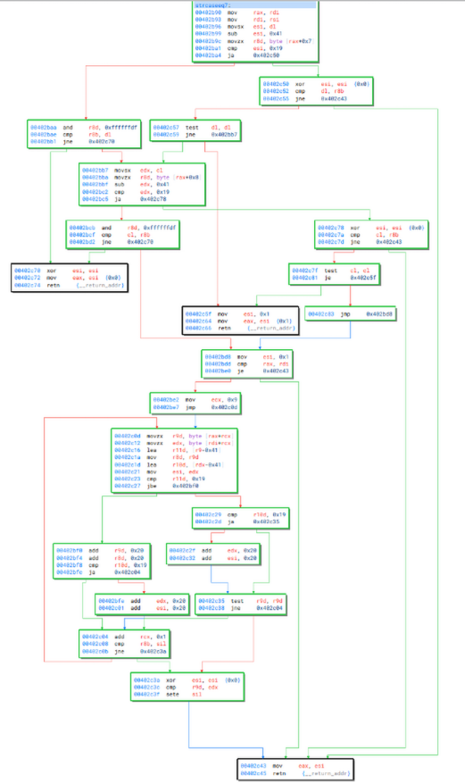
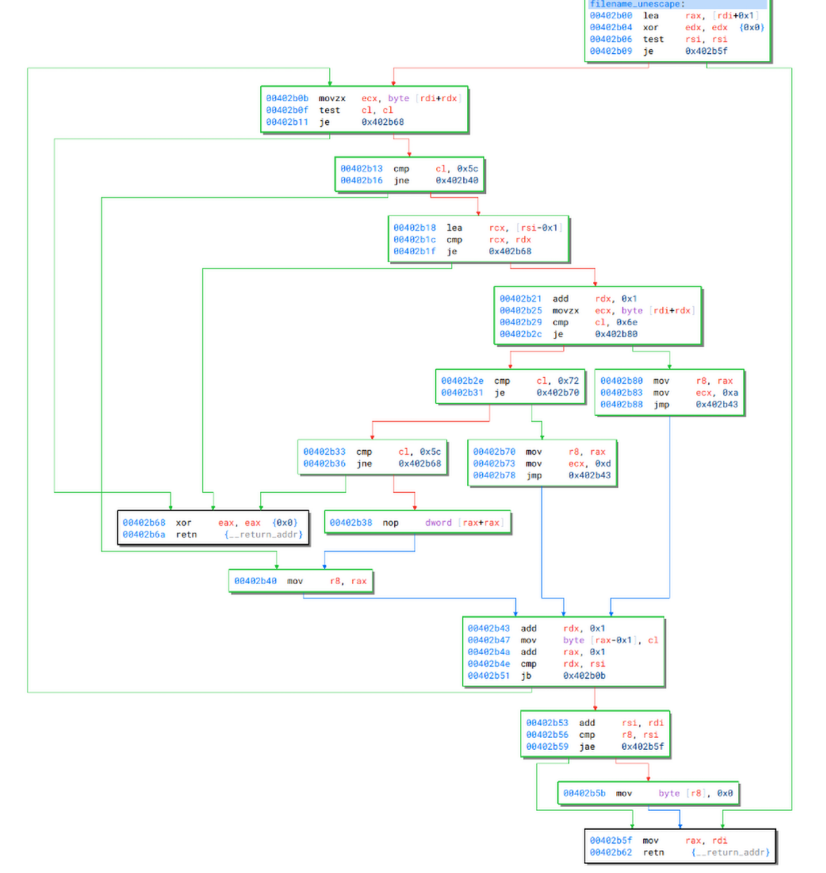
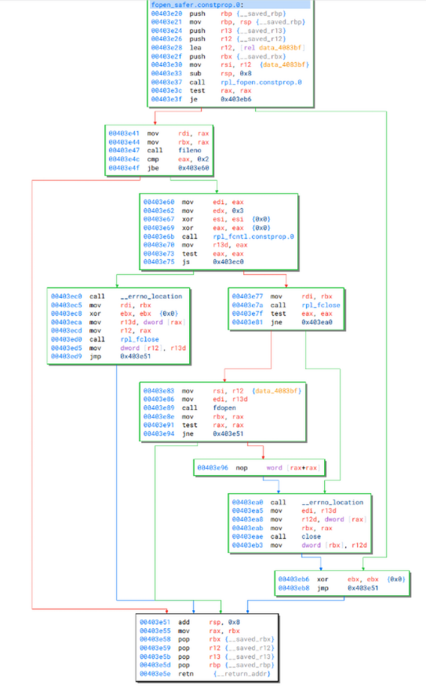
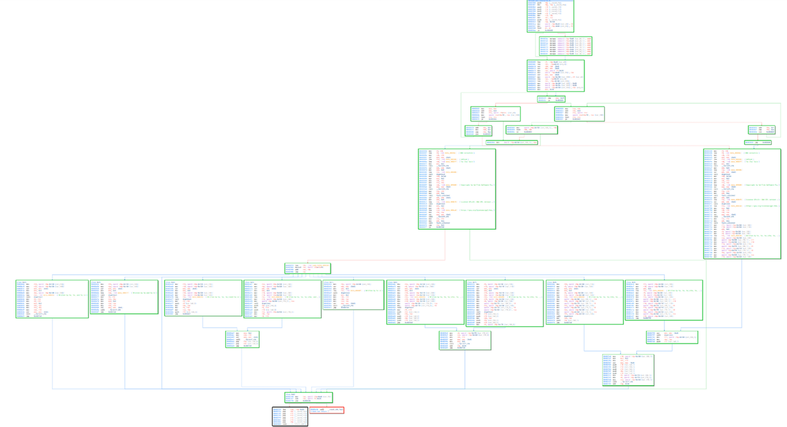
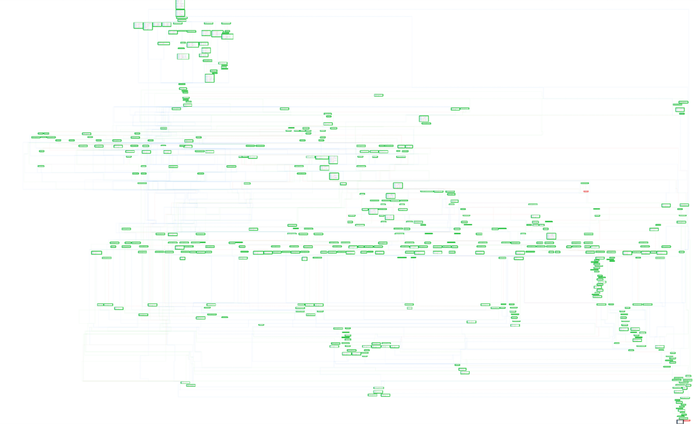
Using the API
Triskel includes an easy to use API for drawing flow graphs in your applications.
It's available for:
#include <triskel/triskel.hpp>
int main(void) {
auto builder = triskel::make_layout_builder();
const auto n1 = builder->make_node("Hello");
const auto n2 = builder->make_node("World");
builder->make_edge(n1, n2)
auto renderer = triskel::make_svg_renderer();
builder->measure_nodes(renderer)
const auto layout = builder->build();
layout->render_and_save(*renderer, "./out.svg");
return 0;
}
from pytriskel.pytriskel import *
builder = make_layout_builder()
# Build the graph
n1 = builder.make_node("Hello")
n2 = builder.make_node("World")
builder.make_edge(n1, n2)
# Measure node size using font size
png_renderer = make_png_renderer()
builder.measure_nodes(png_renderer)
# Export an image
layout = builder.build()
layout.save(png_renderer, "out.png")
import jtriskel.*;
public class Main {
static {
System.loadLibrary("jtriskel");
}
public static void main(String[] args) {
try {
LayoutBuilder builder = jtriskel.make_layout_builder();
ExportingRenderer png_renderer = jtriskel.make_png_renderer();
long n1 = builder.make_node("Hello");
long n2 = builder.make_node("World");
long e = builder.make_edge(n1, n2);
builder.measure_nodes(png_renderer);
CFGLayout layout = builder.build();
builder.delete();
layout.render_and_save_s(png_renderer, "./out.png");
}
catch (Exception e) {
e.printStackTrace();
}
}
}